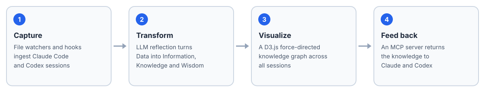

Mnemosyne: Persistent Memory for AI Agents

Overview
AI tools forget everything when a session closes. Claude Code does not remember yesterday's research, Codex cannot see insights from Claude sessions, and decisions and lessons end up buried in chat logs nobody revisits.
Mnemosyne is an agent-agnostic knowledge layer that sits between AI tools and gives them persistent, cross-platform memory. It captures conversations automatically, distills them through a Data, Information, Knowledge, Wisdom (DIKW) pipeline, shows the result as an interactive knowledge graph, and feeds it back to the tools over the Model Context Protocol (MCP).
How It Works

Capture, distill, explore and feed back.
| Stage | Input | Output |
|---|---|---|
| D → I | Raw tool calls and responses | A contextual summary of what happened and why it matters |
| I → K | Information nodes | Reusable patterns and techniques |
| K → W | Knowledge nodes | Strategic judgment: when and why to apply them |
File watchers monitor the Claude Code and Codex session folders, so a finished session is ingested without manual export. Claude Code hooks capture each tool call and trigger reflection when a session ends. The MCP server exposes the accumulated knowledge to Claude Desktop, Claude Code and any MCP-compatible client.
One Memory for Every Tool
A later version runs Mnemosyne on a server as a remote MCP server shared by every tool: claude.ai on web, desktop and mobile as a custom connector, Claude Code, Codex, and bots on the same host.
- Tools:
search_memory,recent_activity,list_projects,get_project_context,get_node,record_learningandexport_skill, with Chinese and English keyword search. - Collector: a zero-dependency script uploads finished Claude Code, Cowork and Codex sessions from each machine; recent sessions are distilled on the server.
- Projects: sessions are filed under the same Claude Projects as in the Claude app, so any tool can ask for a project's context.
Stack: Node.js, Express and WebSocket, SQLite, React and D3.js, MCP. MIT License.